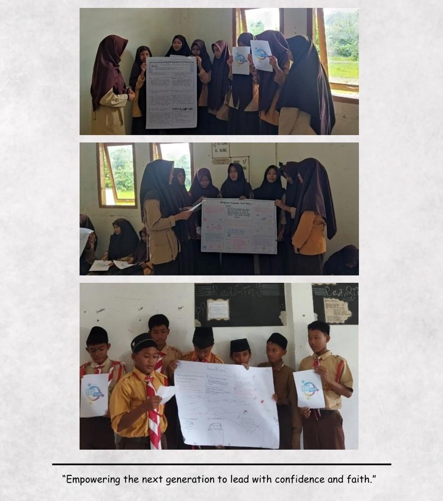
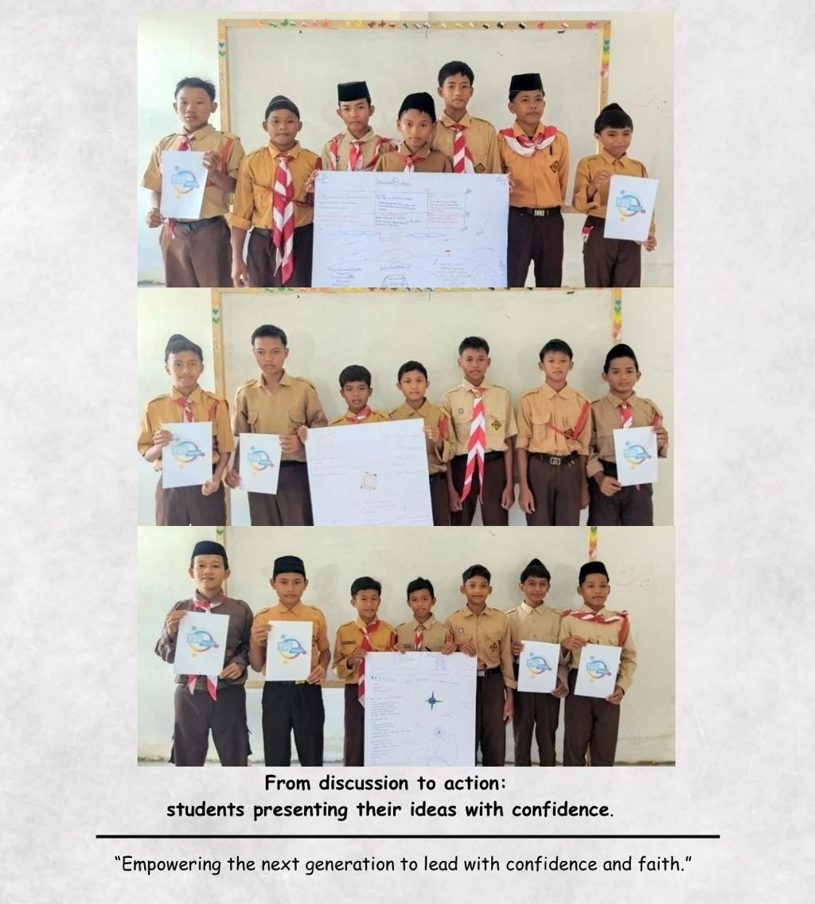
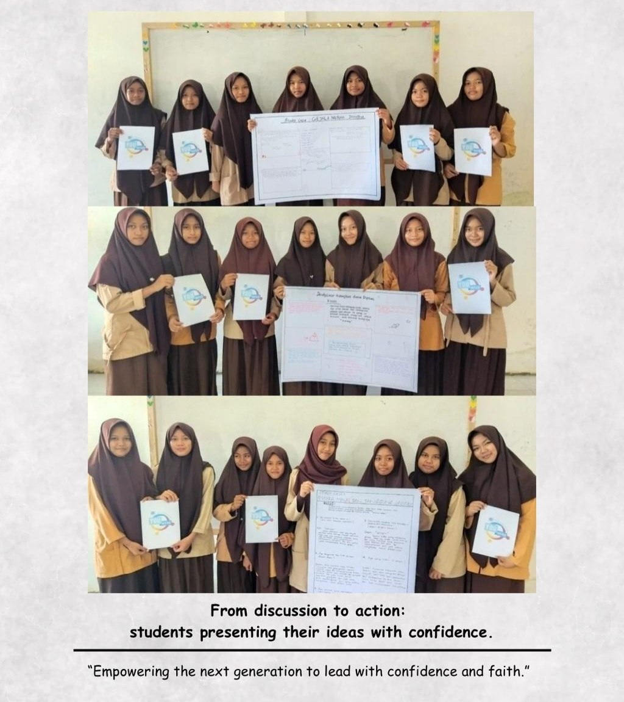
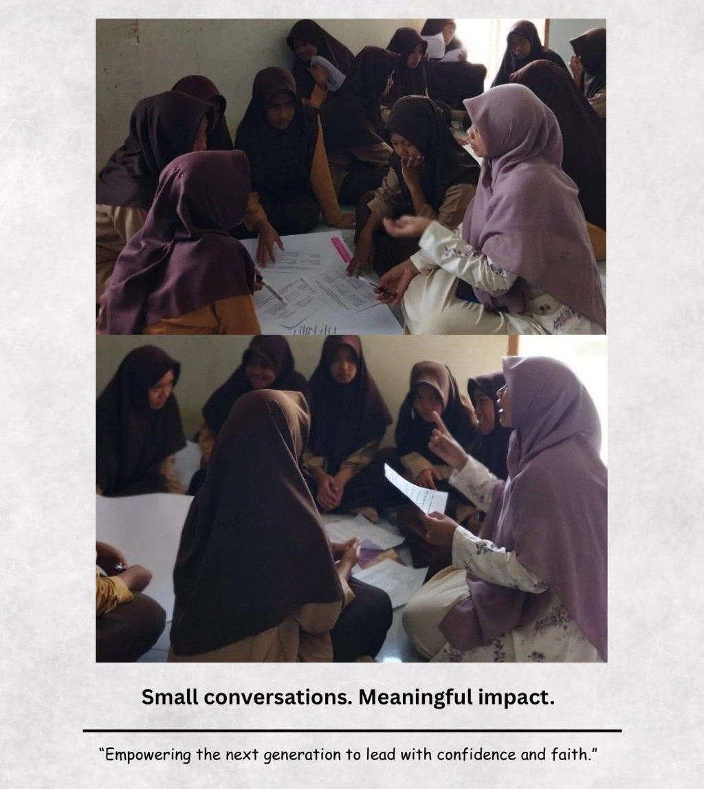
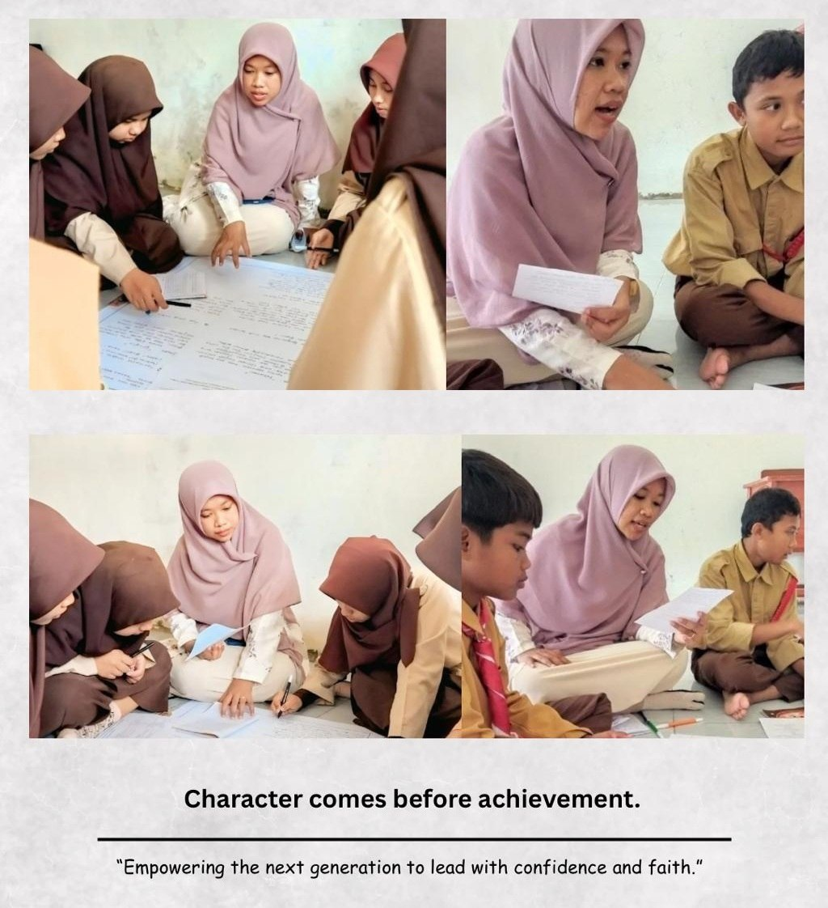
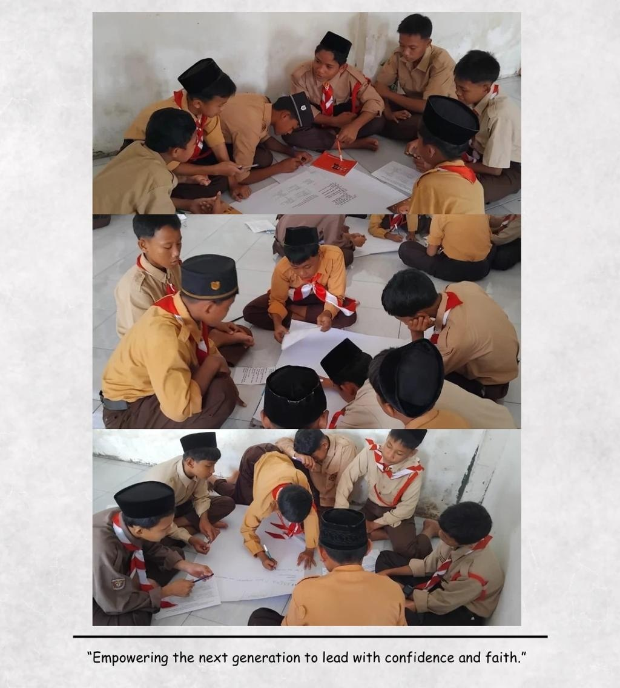
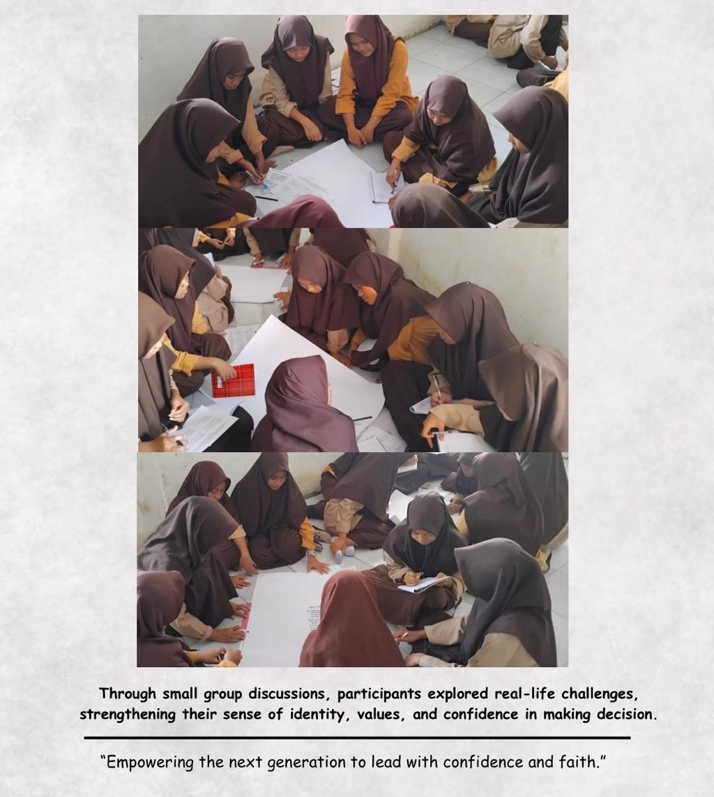
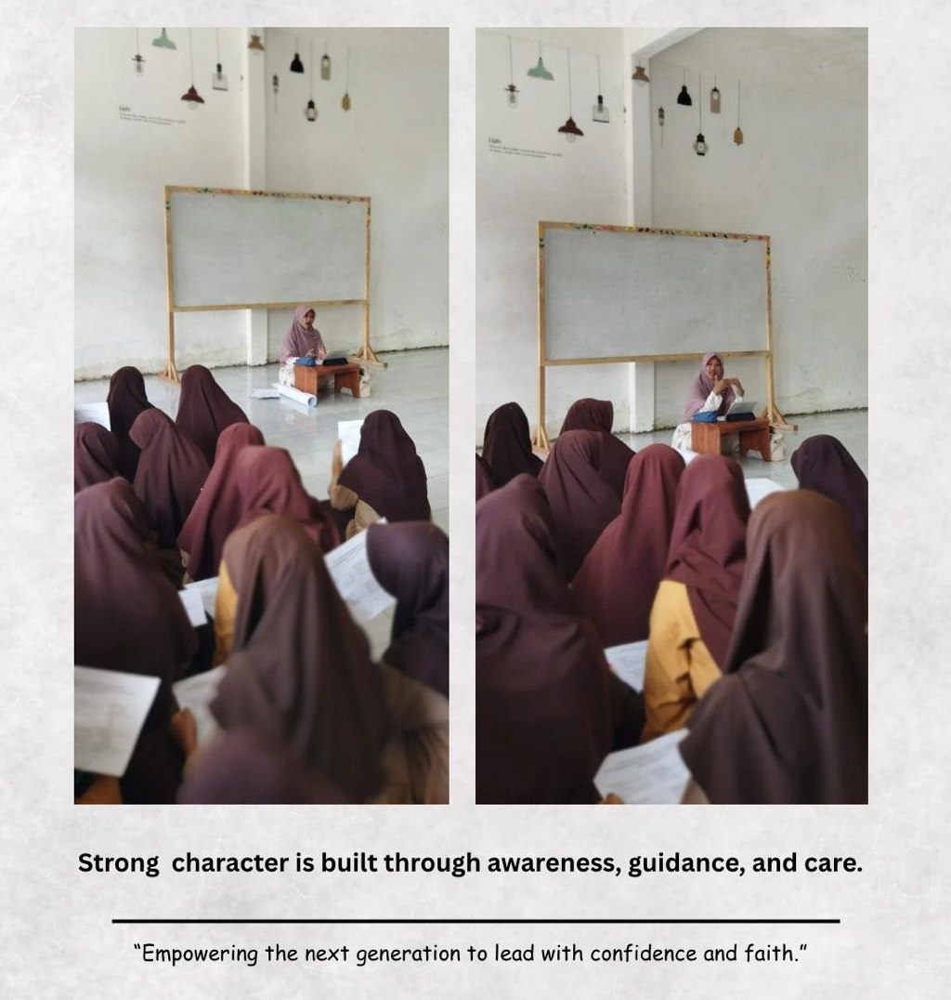
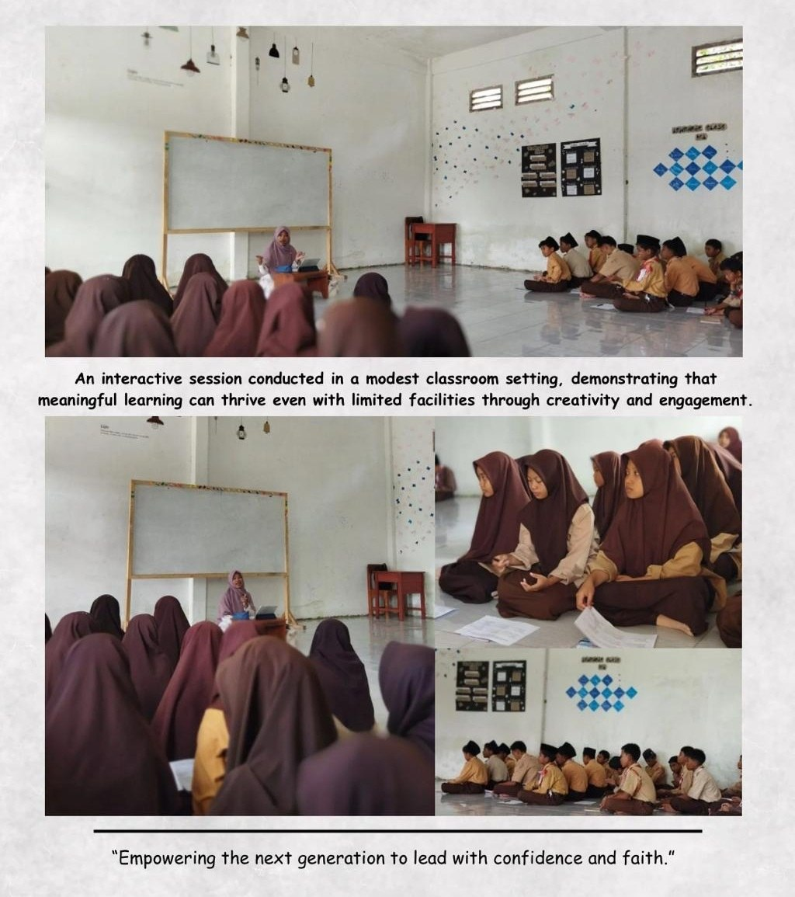
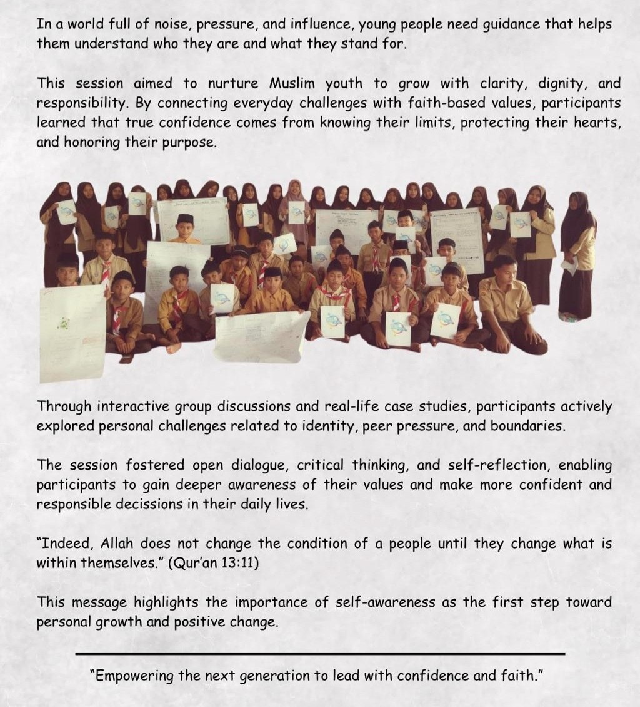

PROJECT · 01
Younified
Youth Empowerment & Personal Boundaries for Gen Z Muslim Teens
Pesantren Maqomam Mahmuda · 60 participants
About the Project
This workshop was conducted as part of the Younified initiative, creating a space for young people to explore confidence, identity, healthy friendships, and personal boundaries.
Through discussions, activities, and real-life cases, participants were encouraged to reflect on how they communicate, build relationships, navigate digital spaces, and make choices that respect themselves and others.
Workshop Gallery










Workshop Highlights
Exploring self-confidence and developing a stronger sense of identity.
Learning how to express thoughts, feelings, and boundaries respectfully.
Reflecting on what makes relationships supportive and healthy.
Discussing boundaries and responsible behavior in digital spaces.
Connecting the discussion to situations young people may encounter in everyday life.
My Role
Teacher & Youth Facilitator
As a Teacher and Youth Facilitator, I delivered and facilitated the workshop as part of the Younified initiative, engaging participants through discussions, activities, and real-life cases.
Reflection
“Sometimes, meaningful learning does not begin with a lesson. It begins with a conversation.”
This experience reminded me that young people need more than information. They also need spaces where they feel heard, respected, and encouraged to think for themselves.
← Back to my journey